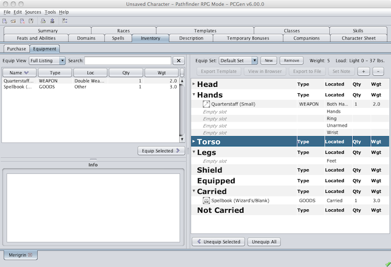
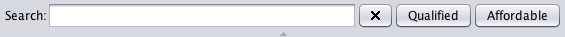
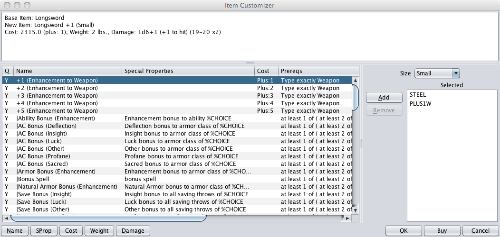
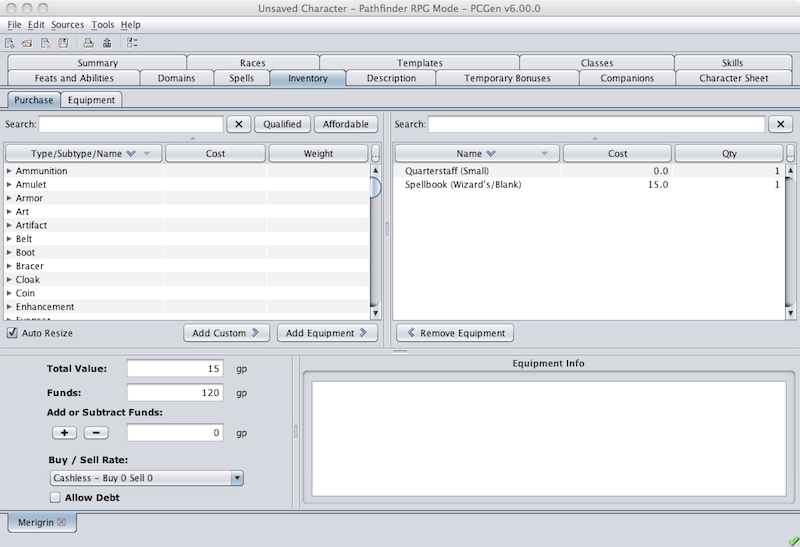
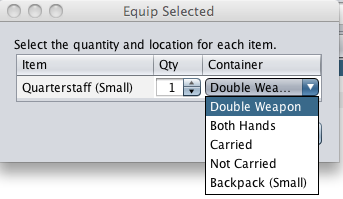
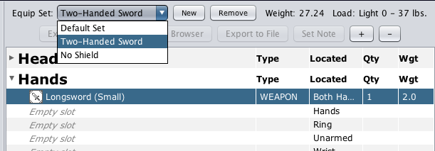
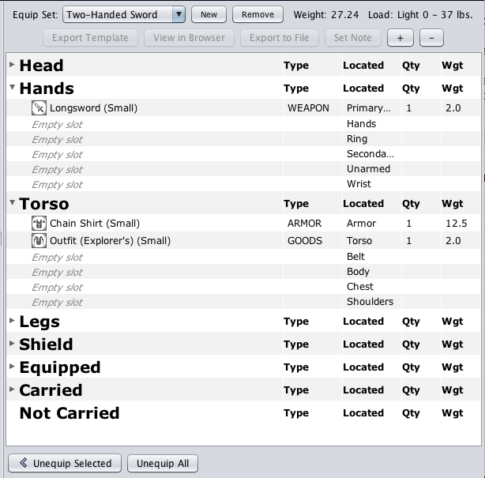

The Inventory tab is where you purchase & equip items that your character possesses. It is made up of two sub-tabs:
This sub-tab allows the purchasing and selling of equipment including armor, shields, weapons, and other equipment of all types.

The left pane includes items that can be bought or customized while the right pane shows the items already purchased or owned.
Items in the left pane that appear in red are items that the character does not have proficiency in. These items may be removed from the list by clicking on the Qualified button. Clicking on the Affordable button will further reduce the list of items, removing items that the current character cannot afford. This will be done even if the Buy/Sell Rate is changed to "Cashless - Buy 0 Sell 0"

The list of items in the left pane is long but can be shorted by entering the name of the piece of equipment being sought. The list of available equipment will change as the items name is entered, narrowing the list of equipment as you go.
Items can be purchased by:
Items can be sold by:
If you right-click any of the items there you will get a drop-down menu of options available for that item, including the following:
As you purchase or sell items you will see the amount of money you have available in the lower left frame diminish or increase as appropriate by an amount equal to the price of the item multiplied by the Buy/Sell Rate
You can modify this total by entering a value in the Add or Subtract Funds field.
The Allow Debt option enables PCGen to allow negative gold amounts to represent what the Character owes.
The Ignore Cost option allows items to be added or removed without effecting the gold value.
To make an item Masterwork, Magical or change its properties (like take a regular set of plate mail and make it small-sized for a small sized PC), right click on it and choose Create custom item .
Note: The item needs to be "Masterwork" if a magical item is to be created.

To add new properties to the item, select them from the left hand pane and either double click or click the Add button. If the Property prerequisites are not met, it is shown in the default error color and it cannot be added.
Other than properties, the following can be modified:
Once all properties have been selected, you can click OK to add it to the item list, Buy to add it to the item list and add it to the characters possessions, or Cancel to close the customizer window without adding the customized item to either the list or to the character.
This sub-tab allows the Gear that was purchased to be equipped to the character.

The Equipment sub-tab helps you organize the gear your character owns as well as determining which weapons and armor are used and in what hands. This sub-tab allows the gear that was purchased to be equipped to the character. The pane on the upper-left contains the items that your character has purchased and the right pane shows the equipment that has been "equipped" and where it has been equipped.
You equip gear by selecting an item from the left pane and clicking on the Equip Selected > button at the bottom right of the pane.

Weapons can be equipped as Single Handed, Two Handed and Both Hands. The equipped style determines what bonuses/penalties apply. Weapons that are carried will appear on the character sheet in the weapons section.
Some items are containers and can hold other items. This can be done by "equipping" the items to the containers directly.

It also allows the creation of multiple equipment sets so you can print output sheets based on different weapon, armor and item combinations for your character.

Select locations for the items your character owns on the upper right frame. Some items are automatically "Equipped" to the appropriate locations, e.g. Armor, Shields, and magical items, if the locations are not already filled. Equipping all items to the appropriate location ensures that PCGen will give the appropriate benefit for using the items.
Every item your character is carrying should be marked "Carried" so your encumbrance will be figured correctly. You can add additional equipment sets by typing in the name of an equipment set and clicking on the Add button (in the Upper right hand frame).